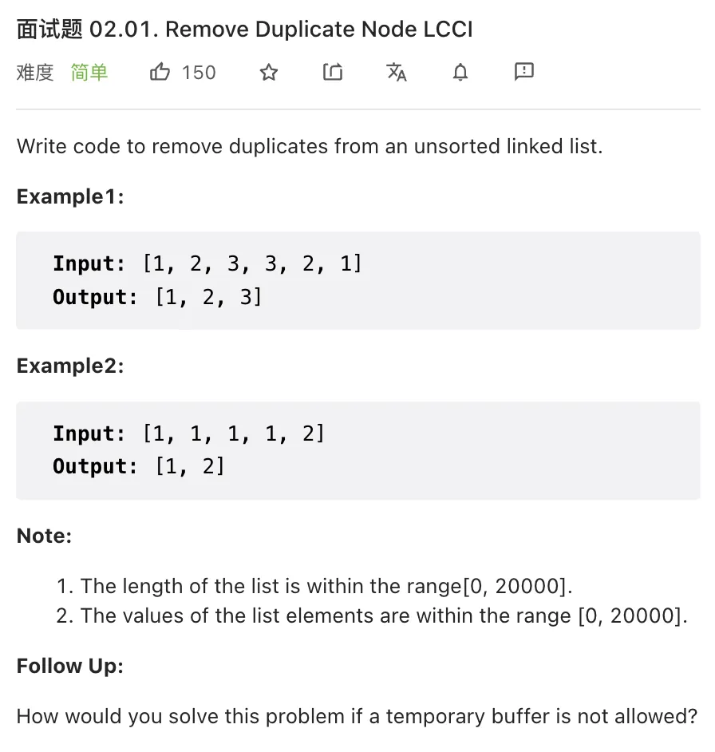

面试题 02.01. 移除重复节点
Question

✍🏽 My Solution
class Solution {
public ListNode removeDuplicateNodes(ListNode head) {
HashSet<Integer> set = new HashSet<Integer>();
ListNode newHead = new ListNode();
ListNode tail = newHead;
ListNode p = head;
while (p != null) {
ListNode tmp = p.next;
if (!set.contains(p.val)) {
set.add(p.val);
tail.next = p;
tail = p;
tail.next = null;
}
p = tmp;
}
return newHead.next;
}
}
🧠 Thought Process
- Why did I choose this particular implementation?
- 有思路，但是編程能力有待加強，有先自己寫，但是後來才參考王爭
- 建立newHead並建立哈希表，遍歷鏈表，如果set 裡面不存在相同節點的值，將節點的值加進set，且把加入結果鏈表尾部
- What is the time/space complexity of my solution? How do I know?
- time: O(n)
- space: O(n)
- What mistakes did I make?
- 加入結果鏈表忘了把tail.next設成null，斷開 p 後面的節點
- 忘了應該要判斷節點的值